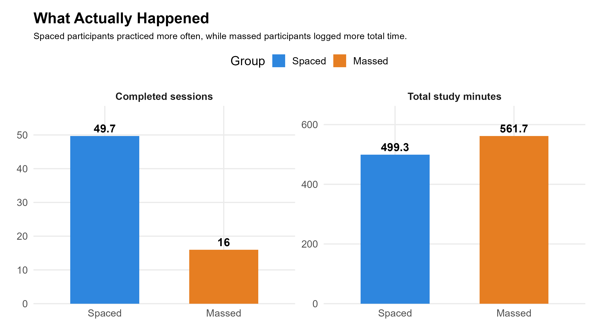
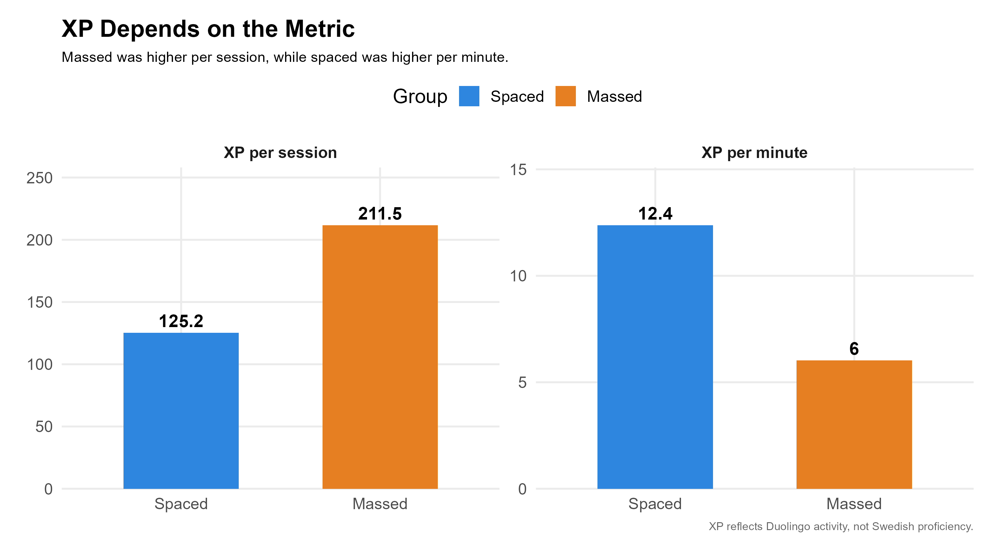
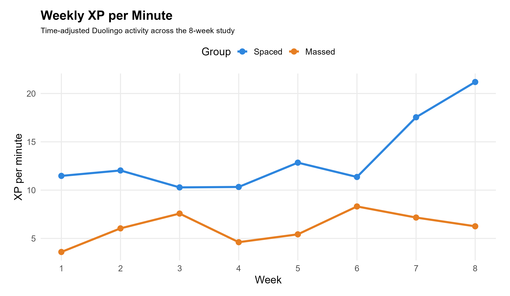
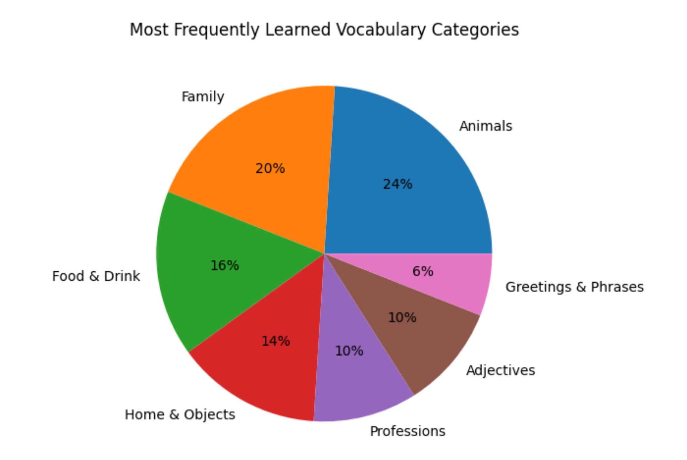
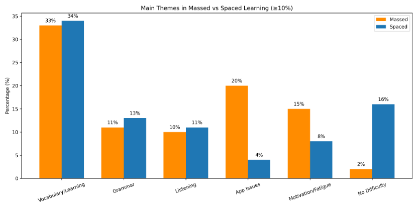
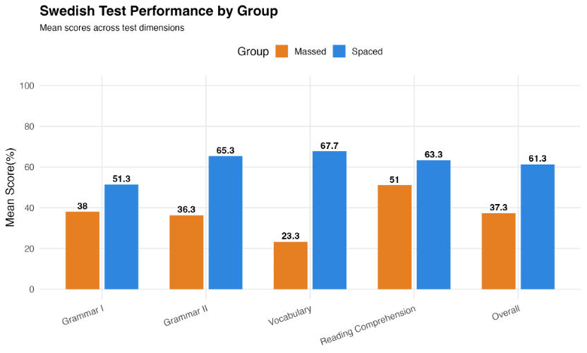
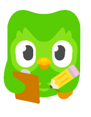

Results
What Actually Happened?
The schedules worked differently in practice.
- The spaced group studied more frequently
- The massed group logged more total study time

Because total study time was not perfectly balanced, the results should be interpreted as descriptive patterns, not a strict test of spacing alone.
XP Results
XP told two different stories.
- Massed shows higher XP per session
- Spaced shows higher XP per minute

XP reflects app activity, not language proficiency.
Weekly Engagement
Study behavior changed over time.

A good study routine needs to be sustainable, not just effective on a single day.
How Study Style Affects Your Learning Experience？
- The spaced group consistently report a better overall learning experience than the massed group
- To be more specific, the spaced group showed higher concentration, confidence, enjoyment and motivation, while the massed group felt slightly less difficulty.

What Learners Actually Felt？
Numbers show patterns, but learners’ reflections reveal what was really happening during their learning.
What learners focused on
Most learners talked about learning：
Vocabulary
Grammar
Listening
Many mentioned that they were mainly picking up new words and basic grammar while using Duolingo.
To better understand what learners focused on, we categorized the vocabulary they reported learning:

As shown in the figure, learners most frequently mentioned categories such as animals, family, and food, suggesting that early learning tends to center on everyday and concrete topics.
We further compared how these themes differed between the two groups:

The figure shows that while both groups focused heavily on vocabulary, the massed group reported more fatigue and app-related issues, whereas the spaced group reported less difficulty overall.
Challenges learners faced
- Learners in the massed group often reported fatigue, frustration, and app-related issues
- Longer study sessions made it easier to feel tired, and small problems in the app became more noticeable
How difficult it felt
- The spaced group reported more “no difficulty” experiences
- Some still found parts of the lessons challenging, but overall, the difficulty felt more manageable
Overall experience
There were clear differences between the two learning styles:
Spaced learning
More manageable, more consistent, less stressful.
Massed learning
More intense, harder to sustain, more tiring.
Overall, short daily practice was easier to keep up with, while longer sessions felt more demanding.
What learners said
“I still can’t tell the difference between läng and ung in listening.”
“I learned fru and man which means husband and wife respectively.”
“Today’s lessons are kind of difficult because I needed to memorize all the words I encountered before.”
Test Results
Participants completed a Swedish proficiency test with four sections:
Grammar I
Grammar II
Vocabulary
Reading
Overall
Highest performance: Reading 57.2%
Overall Mean 49.3%
By Group
- The spaced group outperformed the massed group across all dimensions
- The advantage was especially strong in vocabulary

Summary
- Spaced learning showed a consistent advantage
- The largest effect appeared in vocabulary
- Results are descriptive, with individual differences

- Study frequency matters
- Longer sessions produce more XP per session
- XP is not the same as learning
- Multiple metrics give a better picture
- Short repeated practice may support vocabulary learning
- Learning in Duolingo is a mix of support and confusion